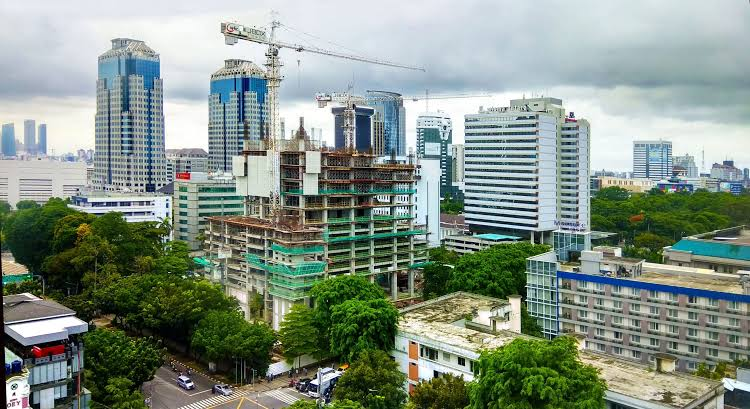
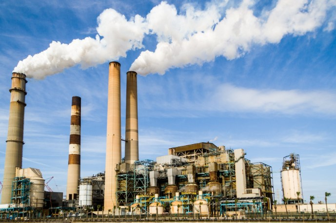
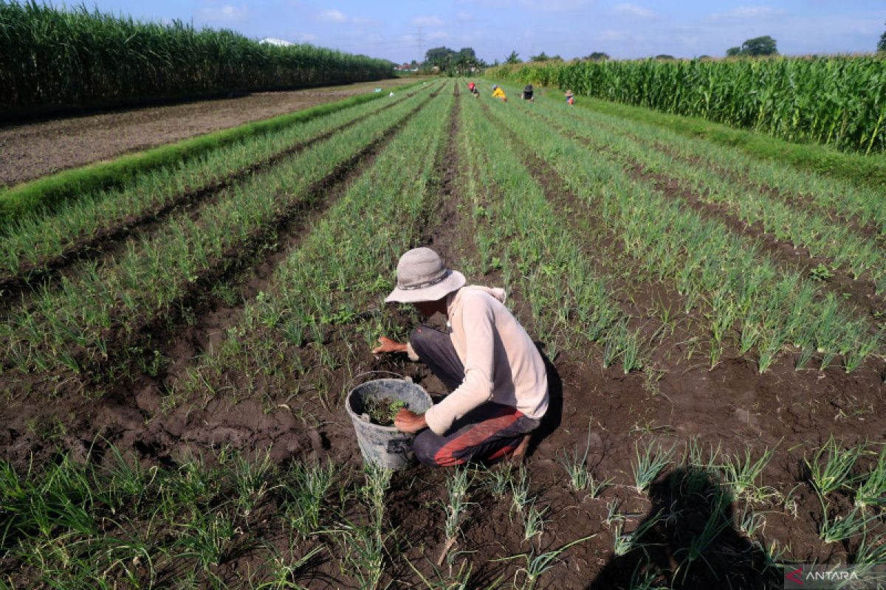
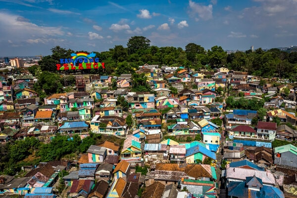
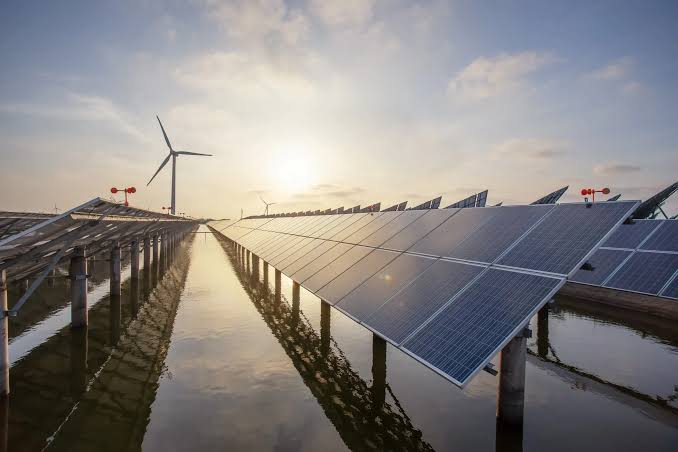
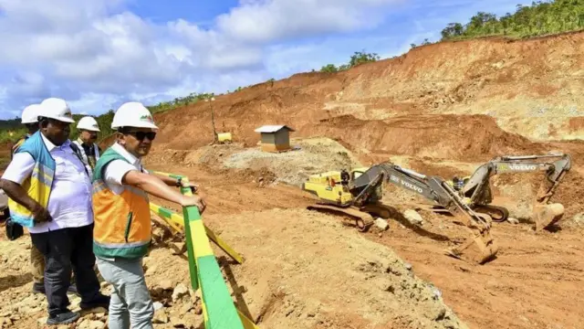

Pembangunan konvensional adalah proses pembangunan yang berorientasi pada pertumbuhan ekonomi, peningkatan infrastruktur, dan pemanfaatan sumber daya alam untuk meningkatkan kesejahteraan masyarakat. Pembangunan konvensional umumnya lebih mengutamakan hasil pembangunan secara fisik dan pertumbuhan ekonomi dalam jangka pendek, seperti pembangunan jalan, gedung, kawasan industri, perumahan, serta fasilitas umum.

Pembangunan ekonomi merupakan bentuk pembangunan yang berfokus pada peningkatan pertumbuhan ekonomi suatu wilayah atau negara melalui peningkatan produksi barang dan jasa, investasi, perdagangan, serta penciptaan lapangan pekerjaan. Pembangunan ini bertujuan meningkatkan pendapatan masyarakat dan memperkuat kondisi perekonomian negara.

Pembangunan infrastruktur merupakan kegiatan pembangunan yang berfokus pada penyediaan sarana dan prasarana fisik untuk menunjang aktivitas masyarakat, pemerintahan, serta kegiatan perekonomian. Infrastruktur menjadi salah satu aspek penting dalam pembangunan konvensional karena dianggap sebagai fondasi utama untuk mempercepat pertumbuhan ekonomi dan meningkatkan konektivitas antarwilayah.

Pembangunan industri merupakan kegiatan pembangunan yang berorientasi pada peningkatan kapasitas produksi barang dan jasa melalui pengembangan kegiatan manufaktur, pengolahan bahan baku, serta pemanfaatan teknologi dan mesin. Pembangunan industri menjadi salah satu bentuk pembangunan konvensional karena mengutamakan peningkatan produksi, efisiensi kerja, keuntungan ekonomi, dan pertumbuhan sektor industri.

Pembangunan pertanian merupakan kegiatan pembangunan yang bertujuan meningkatkan hasil produksi pertanian melalui penggunaan teknologi, alat dan mesin pertanian, pupuk, pestisida, serta sistem pengelolaan lahan secara intensif. Pembangunan ini dilakukan untuk memenuhi kebutuhan pangan masyarakat sekaligus meningkatkan pendapatan petani dan mendukung perekonomian negara.

Pembangunan permukiman dan perkotaan merupakan kegiatan pembangunan yang berfokus pada penyediaan tempat tinggal, fasilitas umum, dan sarana pendukung kehidupan masyarakat di wilayah perkotaan maupun pedesaan. Pembangunan ini dilakukan untuk memenuhi kebutuhan hunian seiring dengan pertumbuhan jumlah penduduk dan meningkatnya aktivitas ekonomi.

Pembangunan energi merupakan kegiatan pembangunan yang berfokus pada penyediaan sumber energi untuk memenuhi kebutuhan rumah tangga, industri, transportasi, dan berbagai aktivitas ekonomi lainnya. Energi merupakan kebutuhan penting dalam pembangunan karena hampir seluruh kegiatan manusia dan proses produksi membutuhkan pasokan energi.

Pembangunan pertambangan merupakan kegiatan pembangunan yang berfokus pada pengambilan dan pemanfaatan sumber daya alam yang terdapat di dalam bumi untuk memenuhi kebutuhan bahan baku industri dan meningkatkan perekonomian. Kegiatan ini meliputi eksplorasi, penggalian, pengangkutan, serta pengolahan berbagai jenis bahan tambang.
Pembangunan berkelanjutan (Sustainable Development Goals/SDGs) adalah konsep pembangunan yang bertujuan memenuhi kebutuhan generasi saat ini tanpa mengorbankan kemampuan generasi mendatang dalam memenuhi kebutuhannya. Pembangunan ini dilakukan dengan memperhatikan keseimbangan antara tiga pilar utama, yaitu ekonomi, sosial, dan lingkungan hidup. Selain meningkatkan pertumbuhan ekonomi dan kesejahteraan masyarakat, pembangunan berkelanjutan juga menekankan pentingnya menjaga kelestarian sumber daya alam, mengurangi kerusakan lingkungan, serta menciptakan pemerataan kesejahteraan agar manfaat pembangunan dapat dirasakan secara adil oleh seluruh masyarakat, baik saat ini maupun di masa depan.